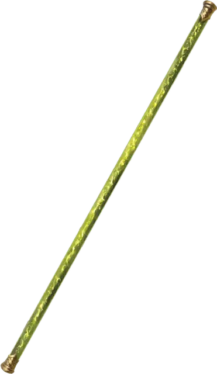

Посох акробата
Quarterstaff of the Acrobat
Оружие (Боевой посох), очень редкое (требуется настройка)

Рекомендованная стоимость 40 000 ЗМ
Вы обладаете бонусом +2 к броскам атаки и урона, совершаемым с этим магическим оружием.
Пока вы держите это оружие, вы можете заставить его излучать Тусклый свет зелёного цвета в радиусе 10 футов — либо Бонусным действием, либо после броска Инициативы — или погасить свет Бонусным действием.
Пока вы держите это оружие, вы можете Бонусным действием, чтобы изменить его форму, превратив в 6-дюймовую палочку (для удобства хранения) или в шест длиной 10 футов, либо вернуть его в форму Боевого посоха; оружие удлиняется только настолько, насколько позволяет окружающее пространство.
В определённых формах оружие обладает дополнительными свойствами.
Помощь в акробатике (только форма Боевого посоха и шеста длиной 10 футов). Пока вы держите это оружие, вы совершаете с Преимуществом проверки Ловкости (Акробатика).
Отражение атаки (только форма Боевого посоха). Когда по вам попадают атакой, пока вы держите оружие, вы можете Реакцией крутануть оружие вокруг себя, получая бонус +5 к Классу Защиты против этой атаки, что может привести к её провалу. Вы не можете использовать это свойство снова до завершения Короткого или Долгого отдыха.
Дальнобойное оружие (только форма Боевого посоха). Это оружие обладает свойством Метательное с нормальной дистанцией 30 футов и максимальной дистанцией 120 футов. Немедленно после того, как вы совершите дальнобойную атаку этим оружием, оно прилетает обратно в вашу руку.